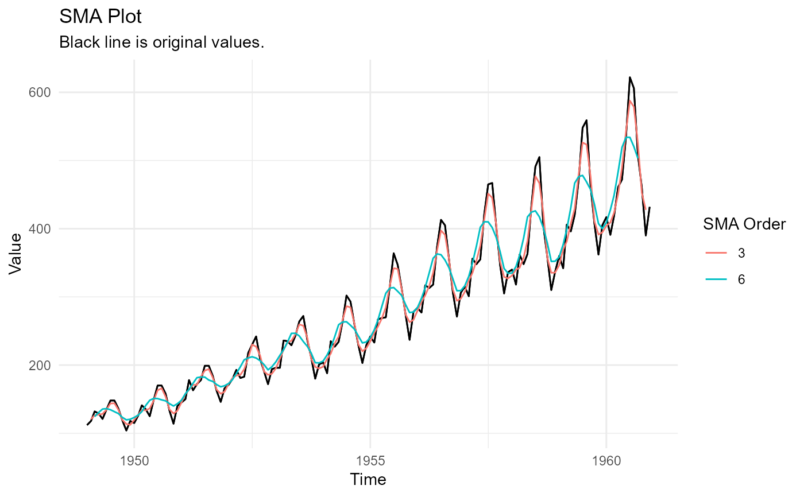

This function will take in a value column and return any number n moving averages.
Usage
ts_sma_plot(
.data,
.date_col,
.value_col,
.sma_order = 2,
.func = mean,
.align = "center",
.partial = FALSE
)Arguments
- .data
The data that you are passing, must be a data.frame/tibble.
- .date_col
The column that holds the date.
- .value_col
The column that holds the value.
- .sma_order
This will default to 1. This can be a vector like c(2,4,6,12)
- .func
The unquoted function you want to pass, mean, median, etc
- .align
This can be either "left", "center", "right"
- .partial
This is a bool value of TRUE/FALSE, the default is TRUE
Details
This function will accept a time series object or a tibble/data.frame. This is a
simple wrapper around timetk::slidify_vec(). It uses that function to do the underlying
moving average work.
It can only handle a single moving average at a time and therefore if multiple are called for, it will loop through and append data to a tibble object.
Examples
df <- ts_to_tbl(AirPassengers)
out <- ts_sma_plot(df, date_col, value, .sma_order = c(3,6))
out$data
#> # A tibble: 288 × 5
#> index date_col value sma_order sma_value
#> <yearmon> <date> <dbl> <fct> <dbl>
#> 1 Jan 1949 1949-01-01 112 3 NA
#> 2 Feb 1949 1949-02-01 118 3 121.
#> 3 Mar 1949 1949-03-01 132 3 126.
#> 4 Apr 1949 1949-04-01 129 3 127.
#> 5 May 1949 1949-05-01 121 3 128.
#> 6 Jun 1949 1949-06-01 135 3 135.
#> 7 Jul 1949 1949-07-01 148 3 144.
#> 8 Aug 1949 1949-08-01 148 3 144
#> 9 Sep 1949 1949-09-01 136 3 134.
#> 10 Oct 1949 1949-10-01 119 3 120.
#> # ℹ 278 more rows
out$plots$static_plot
#> Warning: Removed 7 rows containing missing values or values outside the scale range
#> (`geom_line()`).
